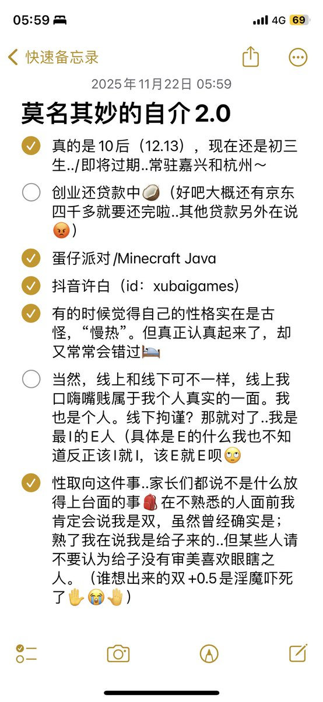

鬼才信这30🚪呢
我要的是交友..而不是充满何意味的请求
喜欢到处旅行 认识不同的人
欢迎以xurui@xurui365.top处联系我，iMessage或Email都可以。
关于我的更多信息可以在 https://t.co/7o3CJQP1td 继续进行～（虽然我已经在做一个和bonjour类似的了但是连demo都没有😭）

我要的是交友..而不是充满何意味的请求
喜欢到处旅行 认识不同的人
欢迎以xurui@xurui365.top处联系我，iMessage或Email都可以。
关于我的更多信息可以在 https://t.co/7o3CJQP1td 继续进行～（虽然我已经在做一个和bonjour类似的了但是连demo都没有😭）

或许就这样..新的自介条～
🚪30（我是为了滤过不熟悉的人！）
哪天混眼熟了..欢迎来扩列！
（同校的或者线下认出我也无妨，抓住我把柄你就说呗，我还盼着有人能关心我呢☺️） https://t.co/s08BElzLoZ
🚪30（我是为了滤过不熟悉的人！）
哪天混眼熟了..欢迎来扩列！
（同校的或者线下认出我也无妨，抓住我把柄你就说呗，我还盼着有人能关心我呢☺️） https://t.co/s08BElzLoZ